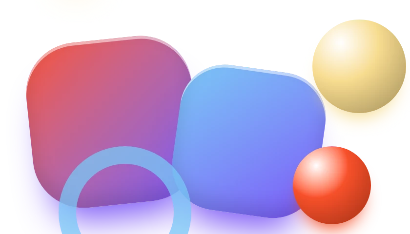

LAB보람찬크루 · 실험실
먼저 만들어 보고, 검증된 것만 씁니다
실제 사이트에 넣기 전에 부품과 움직임을 데모로 만들어 휴대폰·PC에서 확인해요. 모두 크루 공통 컨벤션으로 만들었고, 직접 눌러 볼 수 있어요.
01
데모 다섯 개
카드를 누르면 데모가 열려요. 데모 안의 메뉴로 다른 데모나 크루 사이트로 돌아올 수 있어요.
LAB 06
몰입형 3D 스크롤
스크롤 하나로 카메라가 움직이고 장면이 영화처럼 이어집니다. 상자 더미, 터널, 구름층, 마퀴, 글자 등장, 수평선까지 6장면.
LAB 05
요즘 UI
디자인 갤러리에서 자주 보이는 패턴을 8쪽으로. 내비게이션·CTA·벤토·푸터·마이크로·히어로·섹션·폼.
LAB 04
디지털 역사관 구성
풀페이지 메인과 연대기 하위 페이지. 효과 재생 방식(한 번·매번·되감기·스크롤)을 골라 봅니다.
LAB 03
스크롤 인터랙션
GNB와 푸터가 있는 실제 페이지 구조에서 부드러운 스크롤·섹션 넘김·패럴랙스를 봅니다.
LAB 02
인터랙션 효과
숫자 회전 카운터, 풀페이지, 무한 슬라이더, 모션 탭, 스포트라이트 카드.
LAB 01
UI 키트
shadcn/ui의 디자인과 인터랙션을 옮긴 기본 부품 12종. 라이트·다크 모드.